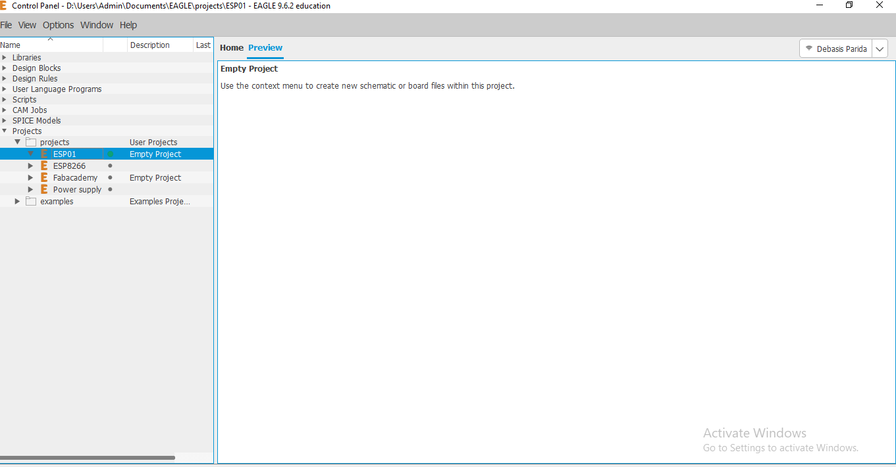
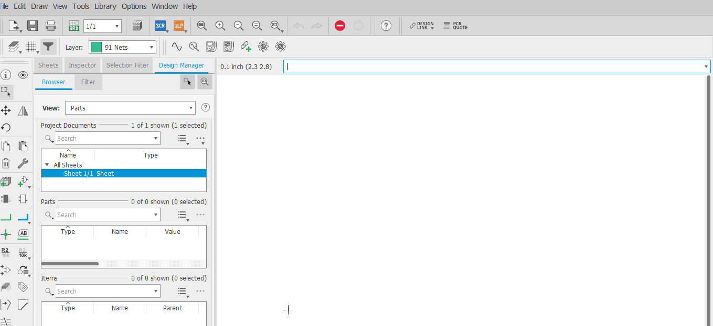
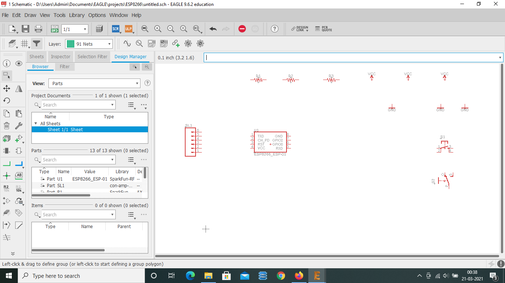
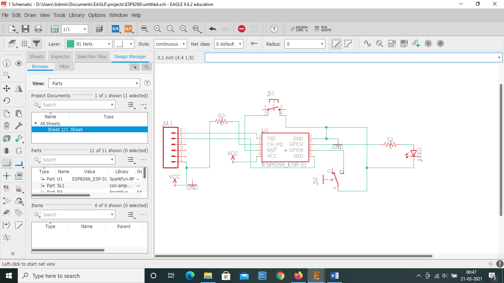
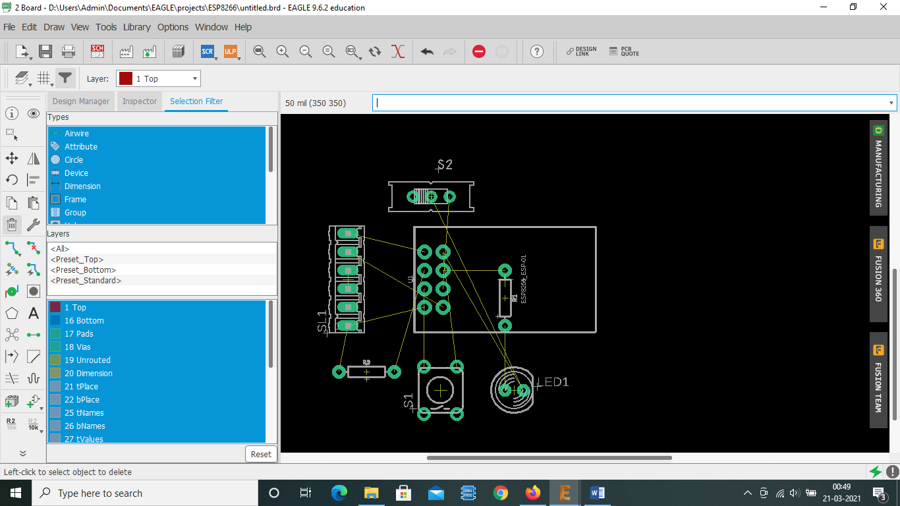
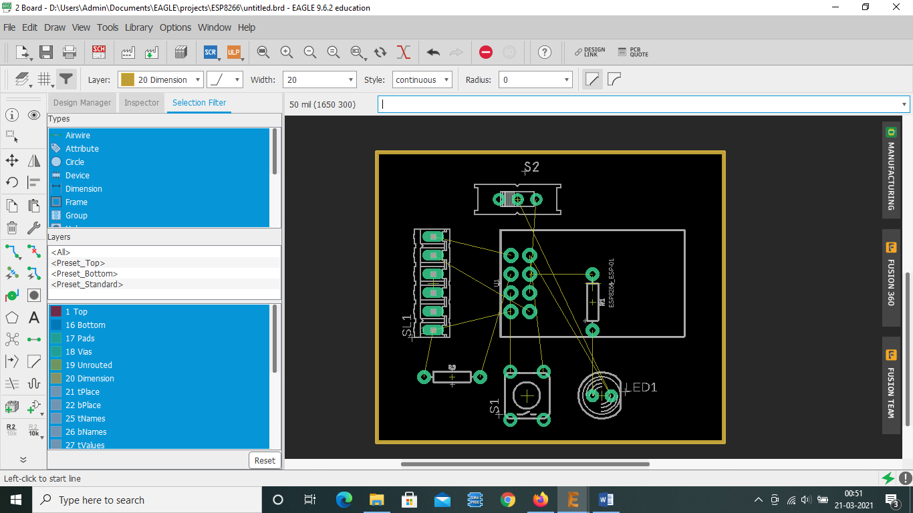

Electronics Design
By: Debasis Parida on:
This week we had to design a "Hello World" Electronic PCB or a Basic Microcontroller board interfaced with a Button or LED to do some basic operations like LED blinking, Button debouncing etc. I am planning to use Eagle PCB design tool to design a circuit of ESP01 WiFi module which can be interfaced a LED to do some Digital Output operations.
Eagle PCB design
EAGLE is electronic design automation (EDA) software that lets printed circuit board (PCB) designers seamlessly connect schematic diagrams, component placement, PCB routing, and comprehensive library content. Here i have used the free version of Eagle software to design my PCB.
- Designing schematic of the design
- Drawing the layout for the Printed Circuit Board (PCB)
- Making the board
Schematic Design
The first step to design a PCB is to create a Schematic diagram, which is nothing but the circuit diagram of the PCB which want to make. So first i opened Eagle and Click on File and select New Project. Rename the Project to an appropriate name.Right click on the project and create new schematic.
 In Eagle schematic, first we need to add all the required components which are required to make the circuit using "add" command. Make sure that, the footprints are same which your required.If the component is not available in eagle, we can also add external library and footprint and import it.After placing all the required components i had to connect them as per circuit diagram using "wire" command. In case we need to wire a very complex diagram we can use "netlist" feature of Eagle, which helps us to simplify and schematic connections.In net listing we use "label" and "name" command to do the net listing.
 After completing the schematic, we have to proceed with the design of the PCB layout. Select the switch to board option from the top tool bar. We can create the board fie from the schematic. It will ask for confirmation, after which we need to place our components as per our schematic. We can use "move" command to move the components or "delete" command to delete any unwanted object. After placing the components, we can create the outline boundary as per our dimension. for this we have to select "layer 20" in the upper taskbar and click "wire" command to draw the outline.
 